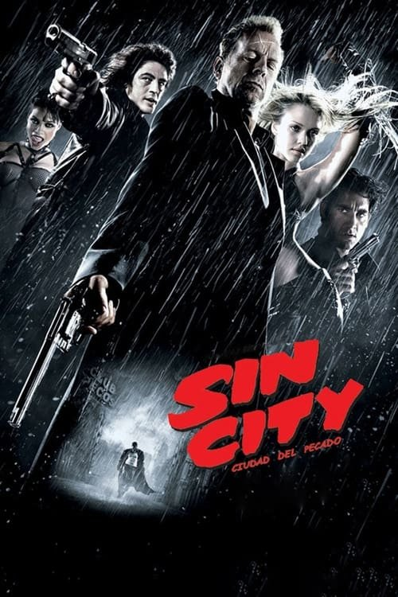

Sin City: Ciudad del pecado (2005)
Sinopsis Rápida
En la ciudad del pecado, donde la moral es un lujo, cuatro historias entrecruzadas de violencia, corrupción y redención se desatan en un explosivo torrente de oscuridad y venganza.
Sinopsis Detallada
Adaptación del cómic de Frank Miller, Sin City es una experiencia visualmente impactante que explora los rincones más sórdidos de Basin City. A través de cuatro historias interconectadas, seguimos a personajes atormentados que buscan justicia en un mundo dominado por la perversión y el poder. La película es una obra maestra del cine negro, con un estilo visual distintivo que mezcla acción, drama y una estética visualmente deslumbrante que impacta con sus tonos oscuros y vibrantes.
¿Por qué tenés que verla?
- Una experiencia visualmente impresionante que redefine el cine negro.
- El estilo visual único de Robert Rodriguez y Frank Miller, que crea una atmósfera inolvidable.
- Su impacto en el cine contemporáneo, inspirando a otros cineastas a explorar nuevos estilos visuales.
- Un reparto estelar con actuaciones memorables.
Idea Extra
Análisis comparativo del estilo visual de Sin City con el cómic original de Frank Miller.